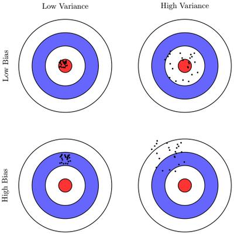
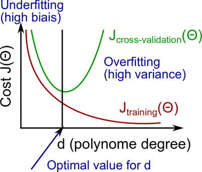
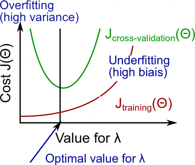

General ML Notes
This notes based on Neural Networks and Deep Learning and Coursera ML Courses. They may seems to be some way unstructured, but such structure is useful for me.
General Approach
- Define network architecture
- Choose right cost function
- Calculate gradient descent if necessary
- Train, tune hyperparameters.
Part I
Sigmoid function:
\(\sigma(\infty)\approx 1\), \(\sigma(-\infty)\approx 0\), but note, that \(\sigma(0)=1\)
Note: sigmoid function (\(\sigma\)) == logistic function so sigmoid neurons can be called as logistic neurons.
MLP is an abbreviation for multilayer perceptrons
cost fucntion == loss function == objective function.
Quadratic cost function (or mean squared error, or just MSE):
Here, w denotes the collection of all weights in the network, b all the biases, n is the total number of training inputs, a is the vector of outputs from the network when x is input, and the sum is over all training inputs, x.
An idea of stochastic gradient descent is to estimate the gradient \(\nabla C\) by computing \(\nabla Cx\) for a small sample of randomly chosen training inputs, not for all inputs as usual gradient descent do. For this stochastic gradient descent take small number of m randomly chosen training inputs. We’ll label those random training inputs \(X1,X2,\ldots ,Xm\) and refer to them as a mini-batch. So now gradinet can be computed as:
Evaluation of algorithm
What we should do:
- Split the dataset into three portions: train set, validate set and test set, in a proportion 3:1:1.
- When the number of examples m increase, the cost \({J_{test}}\) increases, while \({J_{val}}\) decrease. When m is very large, if \({J_{test}}\) is about equal to \({J_{val}}\) the algorithm may suffer from large bias(underfiting), while if there is a gap between \({J_{test}}\) and \({J_{val}}\) the algorithm may suffer from large variance(overfiting).
- To solve the problem of large bias, you may decrease \({\rm{\lambda }}\) in regularization, while increase it for the problem of large variance.
- To evaluate the performance of a classification algorithm, we can use the value: precision, recall and F1.
Precision:
Recall:
F1:
Overfiting and underfiting
{kind=link}
For understanding what exactly mean Bias and Variance you may check this or this cool articles.
To deal with them check this articles: Advice for Applying Machine Learning, Machine Learning System Design, Large Scale Machine Learning.
High bias is underfitting and high variance is overfitting.
Our decision process can be broken down as follows:
- Fixes high variance(overfiting):
- Getting more training examples
- Trying smaller sets of features
- Fixes high bias(underfiting):
- Adding features
- Adding polynomial features
{kind=link}
{kind=link}
When the hypothesis function is too complex or there are too many features while the number of training examples is not large enough, you may get an overfitting problem. In that case, \(J\left( \theta \right)\) of the training set may be very low, while that of the validate set and test set can be high. A good method to solve the problem is regularization which adds the squared term of parameters to the cost function.
 {kind=link}
{kind=link}
- A neural network with fewer parameters is prone to underfitting. It is also computationally cheaper.
- A large neural network with more parameters is prone to overfitting. It is also computationally expensive.